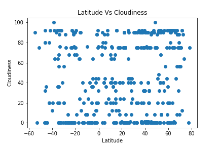

The readout of this information shows 8 distinct trendlines. This seems unlikely, as one
would expect that there aren’t just specific points of latitude with lines of clouds. But
upon further examination, this is a consequence of how cloud cover is most commonly
calculated. Cloud cover is calculated, often using “Okta’s”. “In meteorology, an okta is a
unit of measurement used to describe the amount of cloud cover at any given location
such as a weather station. Sky conditions are estimated in terms of how many eighths
of the sky are covered in cloud, ranging from 0 oktas (completely clear sky) through to
8 oktas (completely overcast). In addition, in the SYNOP code there is an extra cloud
cover indicator '9' indicating that the sky is totally obscured (i.e. hidden from view),
usually due to dense fog or heavy snow.” This would explain the distinct trendlines.